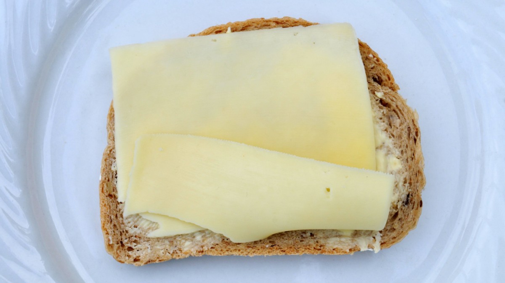

belegtes Käsebrot

We are going to make this
awesome
tasting, very simple Käsebrot!
Zutaten
1 Scheibe Brot nach Wahl
1 Scheibe veganer Käse
Butter
Zubereitung
Die Scheibe Brot dünn mit der Butter beschmieren.
Die Scheibe Käse auf das Brot legen.